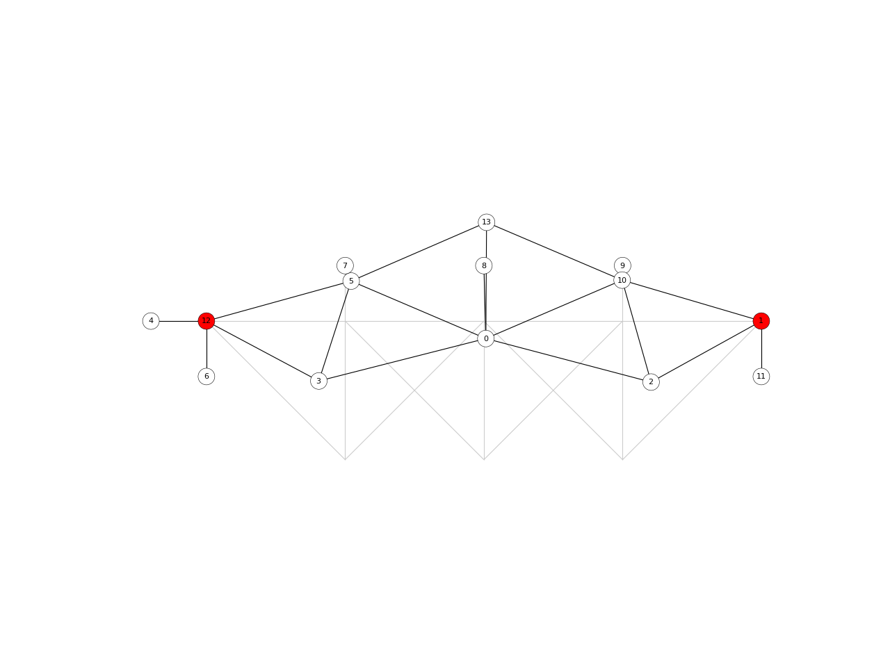

network_embed_in_plane
-
compas.topology.network_embed_in_plane(network, fix=None, straightline=True)[source] Embed the network in the plane.
- Parameters
network (Network) – A network object.
fix (list (None)) – Two fixed points.
straightline (bool (True)) – Embed using straight lines.
- Returns
bool – True if the embedding was successful. False otherwise.
- Raises
ImportError– If NetworkX is not installed.
Warning
This function uses the Python package NetworkX. NetworkX can be pip installed.
Examples
import compas from compas.datastructures import Network from compas.topology import network_embed_in_plane from compas.plotters import NetworkPlotter network = Network.from_obj(compas.get('fink.obj')) embedding = network.copy() fix = (1, 12) if network_embed_in_plane(embedding, fix=fix): plotter = NetworkPlotter(embedding) plotter.draw_lines([{'start': network.vertex_coordinates(u, 'xy'), 'end': network.vertex_coordinates(v, 'xy'), 'color': '#cccccc'} for u, v in network.edges()]) plotter.draw_vertices(radius=0.3, text={key: key for key in embedding.vertices()}, facecolor={key: '#ff0000' for key in fix}) plotter.draw_edges() plotter.show()
